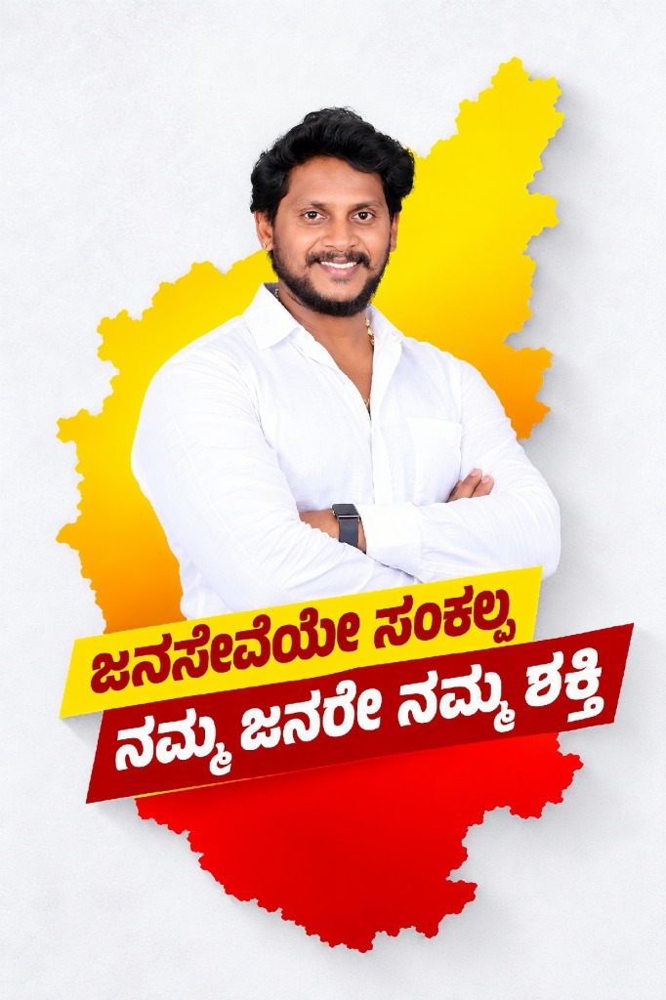
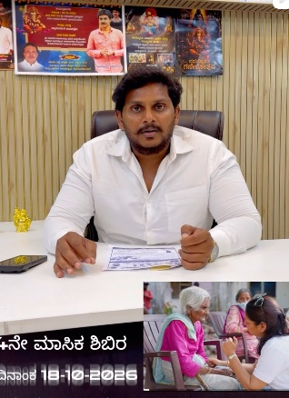
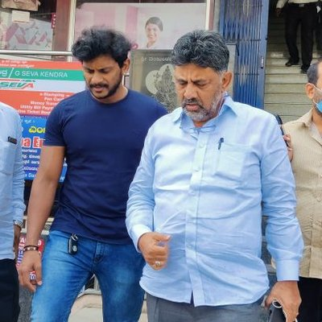

4ನೇ ಮಾಸಿಕ ಆರೋಗ್ಯ ಶಿಬಿರ ಮತ್ತು ಸಾರ್ವಜನಿಕ ಭಾಷಣ
ಉಚಿತ ವೈದ್ಯಕೀಯ ಶಿಬಿರಗಳು ಮತ್ತು ಜನಸಾಮಾನ್ಯರ ಆರೋಗ್ಯ ರಕ್ಷಣೆ ಕುರಿತು ಹರೀಶ್ ನಾಗರಾಜು ಅವರ ಸಂದೇಶ.
ಫೇಸ್ಬುಕ್ನಲ್ಲಿ ವೀಕ್ಷಿಸಿನಮ್ಮ ಜನರೇ ನಮ್ಮ ಶಕ್ತಿ
ಹರೀಶ್ ನಾಗರಾಜು — ಕಾಂಗ್ರೆಸ್ ಮುಖಂಡರು | ಕರ್ನಾಟಕ


ಭಾರತೀಯ ರಾಷ್ಟ್ರೀಯ ಕಾಂಗ್ರೆಸ್ ಪಕ್ಷದ ಸಿದ್ಧಾಂತ ಹಾಗೂ ಸರ್ವಜನರ ಹಿತಾಸಕ್ತಿಗೆ ಬದ್ಧವಾಗಿರುವ ಸಮರ್ಪಿತ ಮುಖಂಡರು. “ಜನಸೇವೆಯೇ ಸಂಕಲ್ಪ | ನಮ್ಮ ಜನರೇ ನಮ್ಮ ಶಕ್ತಿ” ಎಂಬ ನಿಸ್ವಾರ್ಥ ಧ್ಯೇಯದೊಂದಿಗೆ, ಯುವಜನತೆಯ ಉಜ್ವಲ ಭವಿಷ್ಯ, ರೈತ ಸಮುದಾಯದ ಏಳಿಗೆ ಹಾಗೂ ಸಮಸ್ತ ಸಾರ್ವಜನಿಕರ ಸರ್ವತೋಮುಖ ಪ್ರಗತಿಗಾಗಿ ಸದಾ ಮುಂಚೂಣಿಯಲ್ಲಿ ನಿಂತು ಕೆಲಸ ಮಾಡುತ್ತಿರುವ ಜನಪರ ನಾಯಕ.
“ಹರೀಶ್ ನಾಗರಾಜು”
ಜನಸಾಮಾನ್ಯರ ಕುಂದುಕೊರತೆಗಳಿಗೆ ಧ್ವನಿಯಾಗಿ, ತಳಮಟ್ಟದ ಜನರೊಂದಿಗೆ ಸದಾ ಒಡನಾಟ ಹೊಂದಿ, ಸಮಾಜದ ಪ್ರತಿಯೊಬ್ಬ ನಾಗರಿಕನ ಹಕ್ಕು ಮತ್ತು ಕಲ್ಯಾಣಕ್ಕಾಗಿ ನಿರಂತರವಾಗಿ ಶ್ರಮಿಸುತ್ತಿದ್ದಾರೆ.


ಮಾನವ ಹಕ್ಕುಗಳ ರಕ್ಷಣೆ, ಮಾಹಿತಿ ಹಕ್ಕು (RTI) ಸಬಲೀಕರಣ ಹಾಗೂ ಜನಪರ ಸಮಾಜ ಸೇವೆ.
ಉನ್ನತ ಶಿಕ್ಷಣದೊಂದಿಗೆ ಸಾರ್ವಜನಿಕ ಆಡಳಿತ, ತಳಮಟ್ಟದ ಜನಪರ ಚಳವಳಿಗಳು, ಮಾನವ ಹಕ್ಕುಗಳ ರಕ್ಷಣೆ ಹಾಗೂ ಸಾಂವಿಧಾನಿಕ ಆಶಯಗಳ ಕುರಿತು ಅಪಾರ ಅಧ್ಯಯನ ಮತ್ತು ಅನುಭವ.
ಭಾರತೀಯ ರಾಷ್ಟ್ರೀಯ ಕಾಂಗ್ರೆಸ್ ಪಕ್ಷದ ಜಾತ್ಯತೀತ, ಸರ್ವಧರ್ಮ ಸಮಭಾವ ಹಾಗೂ ಸಮಾಜದ ಪ್ರತಿಯೊಬ್ಬ ವ್ಯಕ್ತಿಗೂ ಸಮಾನ ಅವಕಾಶಗಳನ್ನು ಕಲ್ಪಿಸುವ ತತ್ವಕ್ಕೆ ನಿಷ್ಠಾವಂತ ಬದ್ಧತೆ.
“ಇತರರ ಸೇವೆಯಲ್ಲಿ ನಿಮ್ಮನ್ನು ನೀವು ತೊಡಗಿಸಿಕೊಳ್ಳುವುದೇ ನಿಮ್ಮನ್ನು ನೀವು ಕಂಡುಕೊಳ್ಳುವ ಅತ್ಯುತ್ತಮ ಮಾರ್ಗ.”ಮಹಾತ್ಮ ಗಾಂಧಿ
ಸಕ್ರಿಯ ಕಾಂಗ್ರೆಸ್ ಮುಖಂಡರು ಹಾಗೂ ರಾಜ್ಯ ಮಟ್ಟದ ಸಂಘಟಕರು
ಜಿಲ್ಲಾ ಕಾಂಗ್ರೆಸ್ ಜನಸಂಪರ್ಕ ಹಾಗೂ ಜನಪರ ಹೋರಾಟಗಳ ಸಂಯೋಜಕರು
ಕೆಪಿಸಿಸಿ ಯುವ ಘಟಕದ ಪ್ರಮುಖ ನಾಯಕತ್ವ ಹಾಗೂ ಸಮಾಜ ಕಲ್ಯಾಣ ಉಸ್ತುವಾರಿ
ಬ್ಲಾಕ್ ಕಾಂಗ್ರೆಸ್ ನಾಯಕತ್ವ ಹಾಗೂ ಸಾರ್ವಜನಿಕ ಕುಂದುಕೊರತೆ ಉಸ್ತುವಾರಿ
ಯೂತ್ ಕಾಂಗ್ರೆಸ್ (IYC) ಸಕ್ರಿಯ ಸಂಘಟಕರು
ಸದಸ್ಯತ್ವ, ಭಾರತೀಯ ರಾಷ್ಟ್ರೀಯ ಕಾಂಗ್ರೆಸ್
ಭಾರತೀಯ ರಾಷ್ಟ್ರೀಯ ಕಾಂಗ್ರೆಸ್ ಪಕ್ಷದ ಜಾತ್ಯತೀತ, ಪ್ರಜಾಸತ್ತಾತ್ಮಕ ಹಾಗೂ ಸಾಮಾಜಿಕ ನ್ಯಾಯದ ಸಿದ್ಧಾಂತಕ್ಕೆ ಸಂಪೂರ್ಣ ಬದ್ಧರಾಗಿದ್ದಾರೆ.
ಹರೀಶ್ ನಾಗರಾಜು ಅವರ ಸಾರ್ವಜನಿಕ ಸಮಾವೇಶಗಳ ಲೈವ್ ವೀಡಿಯೊಗಳು, ಮಹತ್ವದ ಭಾಷಣಗಳು ಮತ್ತು ಪತ್ರಿಕಾ ಹೇಳಿಕೆಗಳನ್ನು Facebook ನಲ್ಲಿ ವೀಕ್ಷಿಸಿ.
ಜನಹಿತ, ಸಾಮಾಜಿಕ ನ್ಯಾಯ, ಜಾತ್ಯತೀತ ಮೌಲ್ಯಗಳು ಹಾಗೂ ಪಾರದರ್ಶಕ ಸಾರ್ವಜನಿಕ ಸೇವೆಗಾಗಿ ಹರೀಶ್ ನಾಗರಾಜು ಅವರ ನಿರಂತರ ಶ್ರಮ.

“ಜನಸೇವೆಯೇ ಸಂಕಲ್ಪ | ನಮ್ಮ ಜನರೇ ನಮ್ಮ ಶಕ್ತಿ”ಜನಸ್ಪಂದನ, ಸಮುದಾಯ ಕಲ್ಯಾಣ ಮತ್ತು ಕುಂದುಕೊರತೆಗಳಿಗಾಗಿ ಸಂಪರ್ಕಿಸಿ.
ಸಾರ್ವಜನಿಕ ಸಹಾಯವಾಣಿಕರ್ನಾಟಕದಾದ್ಯಂತ ವಿವಿಧ ಸಮುದಾಯ, ಸಾಮಾಜಿಕ ಹಾಗೂ ಜನಕಲ್ಯಾಣ ಸಂಸ್ಥೆಗಳೊಂದಿಗೆ ಸಕ್ರಿಯವಾಗಿ ತೊಡಗಿಸಿಕೊಂಡು ಸರ್ವತೋಮುಖ ಪ್ರಗತಿಗೆ ಶ್ರಮಿಸಿದ ಅನುಭವ.
ಕಾಂಗ್ರೆಸ್ ಪಕ್ಷದ ಸಿದ್ಧಾಂತ, ಜಾತ್ಯತೀತ ಮೌಲ್ಯಗಳು ಹಾಗೂ ಸಂವಿಧಾನದ ಆಶಯಗಳನ್ನು ಮನೆ-ಮನಗಳಿಗೆ ತಲುಪಿಸಿ ಬೂತ್ ಮತ್ತು ಬ್ಲಾಕ್ ಮಟ್ಟದಲ್ಲಿ ಯುವ ಕಾರ್ಯಕರ್ತರನ್ನು ಸಂಘಟಿಸಿದ ಅನುಭವ.
“ಜನಸೇವೆಯೇ ಸಂಕಲ್ಪ | ನಮ್ಮ ಜನರೇ ನಮ್ಮ ಶಕ್ತಿ” ಎಂಬ ಮೂಲಮಂತ್ರದೊಂದಿಗೆ ನಿರಂತರವಾಗಿ ಜನರ ಬಳಿ ತೆರಳಿ ಸಾರ್ವಜನಿಕರ ಕುಂದುಕೊರತೆಗಳನ್ನು ಆಲಿಸಿ ಪರಿಹರಿಸುವ ಕಾರ್ಯ.
ವಿದ್ಯಾವಂತ ಯುವಕ-ಯುವತಿಯರಿಗೆ ಉದ್ಯೋಗಾವಕಾಶಗಳು, ಸ್ಪರ್ಧಾತ್ಮಕ ಪರೀಕ್ಷೆಗಳು ಹಾಗೂ ಕೌಶಲ್ಯ ಅಭಿವೃದ್ಧಿ ಕುರಿತು ತರಬೇತಿ ಮತ್ತು ಮಾರ್ಗದರ್ಶನ ಶಿಬಿರಗಳ ಆಯೋಜನೆ.
ಗ್ರಾಮೀಣ ಮತ್ತು ನಗರ ಪ್ರದೇಶಗಳಲ್ಲಿ ಬಡ ನಾಗರಿಕರಿಗೆ ಉಚಿತ ಆರೋಗ್ಯ ತಪಾಸಣೆ, ನೇತ್ರ ಚಿಕಿತ್ಸೆ ಮತ್ತು ರಕ್ತದಾನ ಶಿಬಿರಗಳನ್ನು ನಿರಂತರವಾಗಿ ಆಯೋಜಿಸಿದ ಸೇವೆ.
ಸ್ಥಳೀಯ ವ್ಯಾಪಾರಿಗಳು, ಬೀದಿಬದಿ ವ್ಯಾಪಾರಿಗಳು ಮತ್ತು ಸಣ್ಣ ಉದ್ಯಮಿಗಳಿಗೆ ಆರ್ಥಿಕ ನೆರವು ಮತ್ತು ಸರ್ಕಾರದ ಸೌಲಭ್ಯಗಳನ್ನು ಒದಗಿಸಲು ನಿರಂತರ ಶ್ರಮ.
ನೈಸರ್ಗಿಕ ವಿಕೋಪಗಳು, ಅತಿವೃಷ್ಟಿ ಹಾಗೂ ಸಂಕಷ್ಟದ ಸಮಯದಲ್ಲಿ ಸಂತ್ರಸ್ತ ಕುಟುಂಬಗಳಿಗೆ ಆಹಾರ, ದಿನಸಿ ಕಿಟ್ ಹಾಗೂ ತುರ್ತು ಪರಿಹಾರ ಒದಗಿಸಿದ ಕಾರ್ಯ.
ಪ್ರಾದೇಶಿಕ ಮೂಲಸೌಕರ್ಯ, ಉತ್ತಮ ರಸ್ತೆಗಳು, ಕುಡಿಯುವ ನೀರಿನ ಪೂರೈಕೆ ಮತ್ತು ಸ್ವಚ್ಛತೆಗೆ ಒತ್ತು ನೀಡುವ ಅಭಿವೃದ್ಧಿಪರ ದೂರದೃಷ್ಟಿ.
ಹಳ್ಳಿಗಳ ಸರ್ವಾಂಗೀಣ ಅಭಿವೃದ್ಧಿ, ಪಂಚಾಯತ್ ರಾಜ್ ಬಲವರ್ಧನೆ ಹಾಗೂ ಶಾಲೆಗಳ ಸೌಲಭ್ಯ ಸುಧಾರಣೆಗೆ ಗ್ರಾಮ ಮಟ್ಟದಲ್ಲಿ ನಿರಂತರ ಭೇಟಿ ಮತ್ತು ಪರಿಶೀಲನೆ.
ಡಾ. ಬಿ.ಆರ್. ಅಂಬೇಡ್ಕರ್ ಅವರ ಸಂವಿಧಾನದ ಮೌಲ್ಯಗಳನ್ನು ಗೌರವಿಸಿ, ಸಮಾಜದ ಸರ್ವ ವರ್ಗಗಳೊಂದಿಗೆ ಸೌಹಾರ್ದತೆ ಮತ್ತು ಸಮಾನತೆ ಕಾಪಾಡುವಲ್ಲಿ ಮುಂಚೂಣಿ.
ಕಾಲೇಜುಗಳು ಮತ್ತು ಶಿಕ್ಷಣ ಸಂಸ್ಥೆಗಳಲ್ಲಿ ವಿದ್ಯಾರ್ಥಿಗಳಿಗೆ ನಾಯಕತ್ವ ಗುಣಗಳು, ಸಾಮಾಜಿಕ ಜವಾಬ್ದಾರಿ ಹಾಗೂ ಸಾರ್ವಜನಿಕ ಸೇವೆಯ ಕುರಿತು ಪ್ರೇರಣಾದಾಯಕ ಉಪನ್ಯಾಸಗಳು.
ಸಾವಿರಾರು ಬಡ ಮಕ್ಕಳಿಗೆ ಶಾಲಾ ಪರಿಕರಗಳ ವಿತರಣೆ, ವಿದ್ಯಾರ್ಥಿವೇತನ ಮಾರ್ಗದರ್ಶನ ಮತ್ತು ಪ್ರತಿಭಾ ಪುರಸ್ಕಾರ ಕಾರ್ಯಕ್ರಮಗಳ ನಿರಂತರ ಆಯೋಜನೆ.
ರೈತರ ಬೆಳೆಗಳಿಗೆ ಸೂಕ್ತ ಬೆಲೆ, ಸಮರ್ಪಕ ನೀರಾವರಿ ಸೌಲಭ್ಯ ಹಾಗೂ ಸಕಾಲಕ್ಕೆ ರಸಗೊಬ್ಬರ ಮತ್ತು ಬೀಜ ವಿತರಣೆಗಾಗಿ ರೈತಪರ ಹೋರಾಟಗಳಲ್ಲಿ ಮುಂಚೂಣಿ.
ಯುವ ಮತದಾರರ ನೋಂದಣಿ ಶಿಬಿರಗಳನ್ನು ನಡೆಸಿ, ಮತದಾನದ ಮಹತ್ವ ಮತ್ತು ಪ್ರಜಾಪ್ರಭುತ್ವದ ಹಕ್ಕುಗಳ ಕುರಿತು ಜನಜಾಗೃತಿ ಮೂಡಿಸಿದ ಕಾರ್ಯಕ್ರಮಗಳು.
ಸಾರ್ವಜನಿಕ ವೇದಿಕೆಗಳಲ್ಲಿ ಜನತೆಯ ಧ್ವನಿಯನ್ನು ಸಮರ್ಥವಾಗಿ ಬಿಂಬಿಸುವ ಅತ್ಯುತ್ತಮ ವಾಕ್ಚಾತುರ್ಯ ಮತ್ತು ಯುವಜನರನ್ನು ಆಕರ್ಷಿಸುವ ನಾಯಕತ್ವ ಶೈಲಿ.
ಸ್ತ್ರೀಶಕ್ತಿ ಮತ್ತು ಮಹಿಳಾ ಸ್ವಸಹಾಯ ಸಂಘಗಳ ಬಲವರ್ಧನೆಗೆ ಬೆಂಬಲ, ಆರ್ಥಿಕ ಸ್ವಾವಲಂಬನೆ ಹಾಗೂ ಸರ್ಕಾರದ ಗ್ಯಾರಂಟಿ ಯೋಜನೆಗಳ ಸದ್ಬಳಕೆಗೆ ಪ್ರೋತ್ಸಾಹ.
ರೈತರಿಗೆ ಆಧುನಿಕ ಬೇಸಾಯ ಪದ್ಧತಿಗಳು, ನೀರು ಸಂರಕ್ಷಣೆ ಮತ್ತು ಮೌಲ್ಯವರ್ಧನೆ ತಂತ್ರಜ್ಞಾನಗಳ ಕುರಿತು ಜಾಗೃತಿ ಶಿಬಿರಗಳ ಆಯೋಜನೆ.
Instagram (@harish_nagaraju_official), YouTube, Facebook ಮತ್ತು Twitter ಮೂಲಕ ಸಾರ್ವಜನಿಕರ ಸಮಸ್ಯೆಗಳಿಗೆ ಸದಾ ಸ್ಪಂದಿಸುವ ನೇರ ಸಂಪರ್ಕ.
ಹರೀಶ್ ನಾಗರಾಜು ಅವರ ಇತ್ತೀಚಿನ ಸಾರ್ವಜನಿಕ ಭಾಷಣಗಳು ಮತ್ತು ಜನಸೇವೆಯ ಮುಖ್ಯಾಂಶಗಳು.
ಹರೀಶ್ ನಾಗರಾಜು ಅವರ ಅಧಿಕೃತ ಸಾಮಾಜಿಕ ಮಾಧ್ಯಮಉಚಿತ ವೈದ್ಯಕೀಯ ಶಿಬಿರಗಳು ಮತ್ತು ಜನಸಾಮಾನ್ಯರ ಆರೋಗ್ಯ ರಕ್ಷಣೆ ಕುರಿತು ಹರೀಶ್ ನಾಗರಾಜು ಅವರ ಸಂದೇಶ.
ಫೇಸ್ಬುಕ್ನಲ್ಲಿ ವೀಕ್ಷಿಸಿಹಿರಿಯರಿಗೆ ನೆರವು ಮತ್ತು ತಳಮಟ್ಟದ ಜನಸೇವಾ ಕಾರ್ಯಕ್ರಮಗಳು.
ವೀಡಿಯೊ ವೀಕ್ಷಿಸಿಪಕ್ಷದ ಹಿರಿಯ ನಾಯಕರೊಂದಿಗೆ ಸಮಾಲೋಚನೆ ಮತ್ತು ಪ್ರಗತಿಯ ಯೋಜನೆಗಳು.
ಯೂಟ್ಯೂಬ್ನಲ್ಲಿ ವೀಕ್ಷಿಸಿಜನರ ಧ್ವನಿಯಾಗಿ ಹರೀಶ್ ನಾಗರಾಜು ಅವರ ನಿರಂತರ ಸಾರ್ವಜನಿಕ ಸಂಪರ್ಕ.
ಯೂಟ್ಯೂಬ್ನಲ್ಲಿ ವೀಕ್ಷಿಸಿ
ಹರೀಶ್ ನಾಗರಾಜು • ಕಾಂಗ್ರೆಸ್ ಮುಖಂಡರು @inc_karnataka
ಜನಸೇವೆಯೇ ಸಂಕಲ್ಪ • ನಮ್ಮ ಜನರೇ ನಮ್ಮ ಶಕ್ತಿ
ಸಾರ್ವಜನಿಕರ ಕುಂದುಕೊರತೆಗಳು ಹಾಗೂ ಸಲಹೆಗಳನ್ನು ಸ್ವೀಕರಿಸಲು ನಾವು ಸದಾ ನಿಮ್ಮೊಂದಿಗೆ ಸಂಪರ್ಕದಲ್ಲಿರುತ್ತೇವೆ.
ಹರೀಶ್ ನಾಗರಾಜು ಅವರ ಕಾರ್ಯಾಲಯ, ಕರ್ನಾಟಕ, ಭಾರತ
ನಿಮ್ಮ ಸಮಸ್ಯೆಗಳು ಅಥವಾ ಸಂದೇಶವನ್ನು ನೇರವಾಗಿ ಹರೀಶ್ ನಾಗರಾಜು ಅವರ ಕಾರ್ಯಾಲಯಕ್ಕೆ ಕಳುಹಿಸಿ